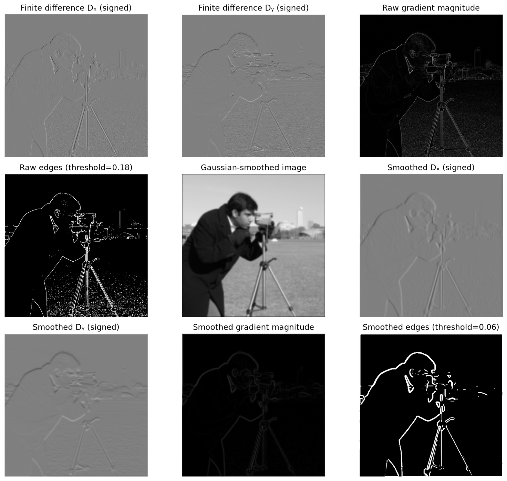
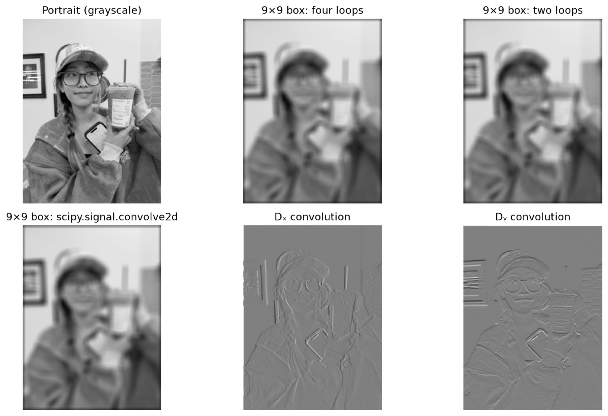

Project 02 · Fall 2026
Fun with Filters
& Frequencies
Esther Ng Xin Yue
The project in one line
Change the frequencies, change what an image communicates.
Find edges by keeping local change.
Boost high-frequency detail.
Change perception with distance.
Hide seams across frequency bands.
Part 1 · Filters and edges
Edges are changes in brightness.
Finite differences measure horizontal and vertical change. A Gaussian blur removes fine noise before those differences are measured.

Technical evidence: convolution and derivative-of-Gaussian results +
Both NumPy convolutions match SciPy to floating-point precision; zero-filled padding darkens the boundary. The derivative-of-Gaussian combines blur and differentiation in one operation, and the HSV view maps edge direction to hue.


Part 2.1 · Sharpening
Sharpening adds detail back.
Unsharp masking subtracts a blurred image from the original, then adds some of that high-frequency residual back.

Technical evidence: custom blur-and-recover test +

Part 2.2 · Hybrid images
Up close, see one image. Far away, see another.
A hybrid combines the low-frequency information of one aligned image with the high-frequency information of another.


Technical evidence: Derek + Nutmeg frequency analysis +
Derek supplies low frequencies (σ = 7); aligned Nutmeg supplies high frequencies (σ = 5). The Fourier panels show the separation between broad image structure and fine detail.

Parts 2.3 + 2.4 · Stacks and blending
Blend the coarse and fine details separately.
I used Laplacian stacks for the two images and a Gaussian stack for the mask. Each frequency band gets a softer version of the same transition.


Technical evidence: Gaussian/Laplacian stacks and band-by-band blending +
Gaussian levels progressively remove detail. Laplacian levels store the detail lost between Gaussian levels; summing them reconstructs the image. The process views show the corresponding bands blended with the mask stack.


Takeaway
My main lesson
Frequency is a useful design tool: it decides which details remain, which fade away, and how two different images can become one coherent picture.